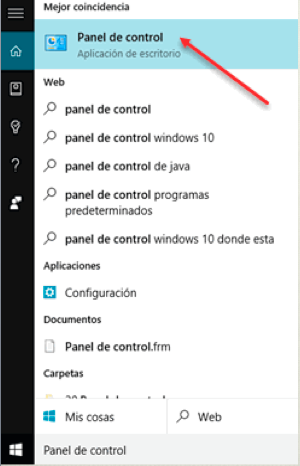
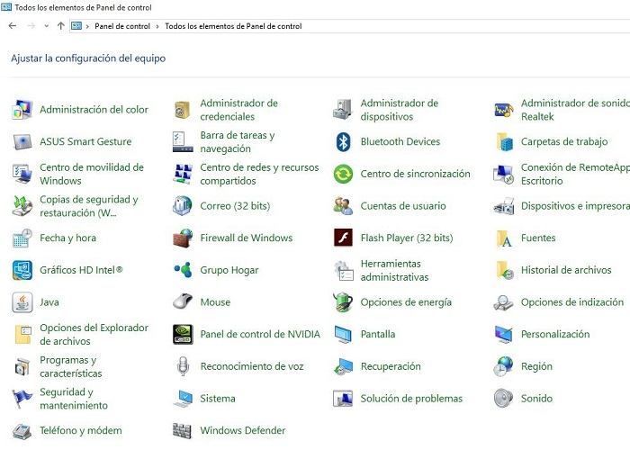
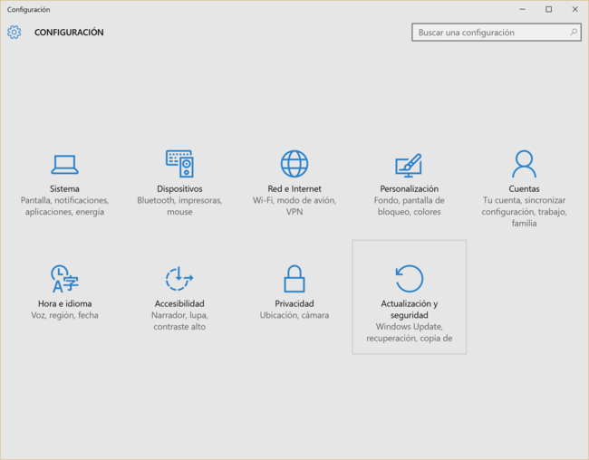
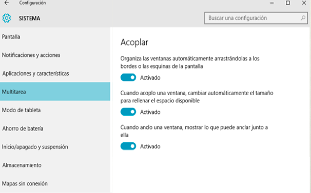
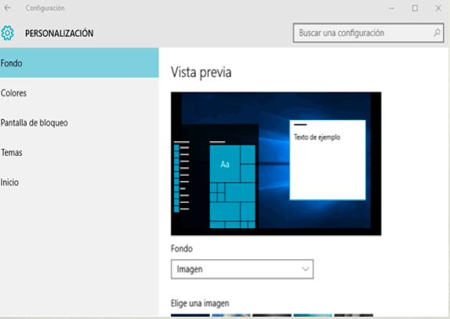

En versiones anteriores de Windows, las tareas de configuración del sistema se realizaban a través de El Panel de Control. Este panel aún está presente en Windows 10. Para activarlo podemos ir a la caja de búsqueda, escribir simplemente Panel de control y aparecerá como una aplicación más. Al hacer clic en el resultado, arriba en la imagen, se abre la ventana del Panel.

El Panel de Control se ve así:

Como podemos ver, la configuración de diversos aspectos de nuestro equipo, como los dispositivos conectados, la administración de energía, la personalización de pantalla y un buen número de temas más, se realizaba a través de los iconos del panel. En función del tema deseado, se pulsa el icono y éste abre la ventana con las opciones correspondientes. El diseño de las ventanas de cada icono no era homogéneo. Es decir, cada icono abría ventanas que resultaban disímiles unas de otras. A decir verdad, el panel de control no era para cualquier usuario y la búsqueda de un tema específico, por ejemplo configurar las bocinas y el micrófono, implicaba siempre revisar diversas opciones no relacionadas.
La nueva ventana de Configuración de Windows 10, desde nuestro punto de vista, es un inteligente esfuerzo de simplificación de estas funciones. Las muchas tareas de configuración del equipo, indispensables varias de ellas, se muestran en una interfaz simple en el que navegamos a través de unos pocos iconos que agrupan diversos temas.
Ya sea que abramos la configuración desde el menú Inicio, con la opción del mismo nombre, o con el botón del Centro de actividades que revisamos en el apartado anterior, la ventana muestra la siguiente apariencia.

La configuración de Windows está organizada en nueve temas:
1) Sistema
2) Dispositivos
3) Red e Internet
4) Personalización
5) Cuentas
6) Hora e idioma
7) Accesibilidad
8) Privacidad
9) Actualización y seguridad.
Como puedes ver, sería tautológico mencionar a qué se refiere cada icono, pues se explican por sí mismos.
Cuando hacemos clic en cualquiera de esos iconos, la ventana cambia mostrando siempre la misma estructura de organización de los elementos de configuración. A la izquierda, un panel con los diversos temas que corresponden a la categoría de icono pulsada y, a la derecha, los distintos parámetros a configurar.
Por ejemplo, al pulsar en Sistema, la ventana cambia de este modo.

En la parte superior izquierda de la ventana, tenemos siempre una flecha que nos devuelve a la pantalla principal de Configuración. Luego vemos el título de la categoría en la que nos encontramos. El panel a la izquierda muestra los diversos temas a configurar en esta categoría (en la imagen anterior, Multitarea está resaltado). A la derecha, los parámetros correspondientes al tema. Si regresamos a la ventana principal y seleccionamos otro icono, por ejemplo Personalización, veremos que la estructura es la misma: Panel con temas a la izquierda, parámetros a configurar a la derecha.

Sólo en muy contadas ocasiones, es probable que tengamos que abrir algún icono del Panel de Control, tal vez por ello no desaparece del todo en esta versión. Sin embargo, esta nueva manera de modificar la configuración de Windows es mucho más sencilla de manejar y debe ser tu primera opción para cambiar o personalizar el sistema, aún cuando seas usuario de versiones anteriores, de este modo te acostumbrarás más rápido al uso del sistema operativo.
Nuestro objetivo en este apartado era mostrar dónde están las opciones de Configuración de Windows y qué estructura lógica tienen acceder a ellas y cambiarlas. La Configuración de diversos elementos en sí se estudian a lo largo del curso según los temas que estemos tratando, por lo que volveremos con cierta frecuencia a esta ventana, en particular en la unidad 14.